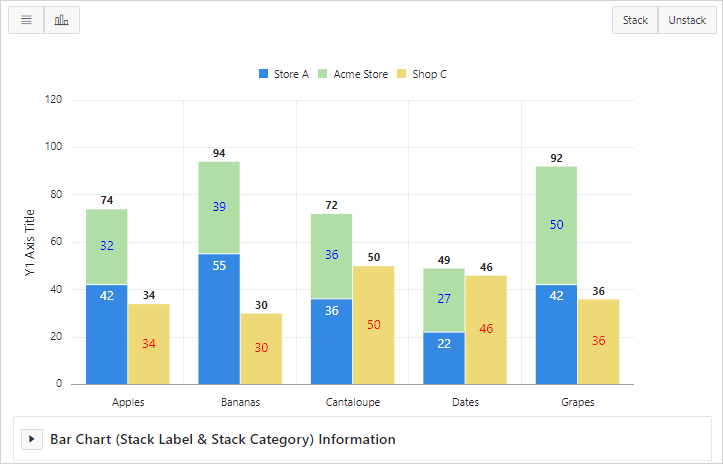

10.3.2 Sample Charts
View chart examples in the Sample Charts sample app.
Sample apps are designed to highlight specific functionality and are intended to serve as a developer guide on how to make use of a particular feature. The following is a sample bar chart from Sample Charts sample app.

Description of the illustration sample_charts.png
Click Horizontal and Vertical to toggle between a horizontal or vertical display. Click Stack and Unstack to view two series of data or three series of data.
This chart displays two series of data, Store A and Acme Store, stacked and associated with the Y axis, and the third series of data, Shop C, associated with an extra Y axis and rendered as a separate chart below the other two series of data.
Expand the Bar Chart (Stack Label & Stack Category) Information region at the bottom of the page to view information on the chart.
Tip:
To view chart examples, install the sample app, Sample Charts. To learn more, see Installing Apps from the Gallery.
Parent topic: Creating Charts